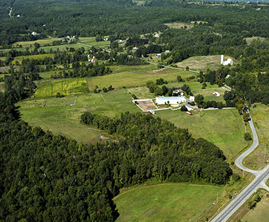

Featured Farmer
Misty Ayr Farms
We operate a 150 acre farm in beautiful Oak Hills, situated just 10 minutes north of Belleville and the 401. We raise Berkshire pigs, Katahdin sheep, Bronze turkeys, meat chickens and peking ducks in a natural environment. All our livestock are fed on natural grains. No growth hormones or enhancers. Visitors welcome strictly by appointment only due to biosecurity measures.
Location:
Misty Ayr Farm
65 Airport Road
Stirling, ON K0K 3E0